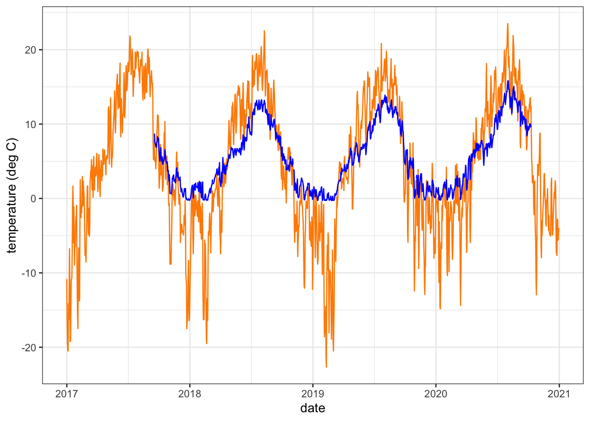
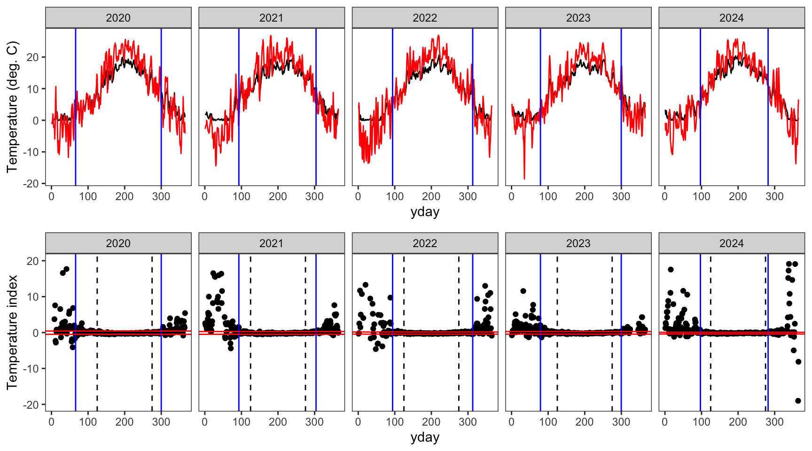
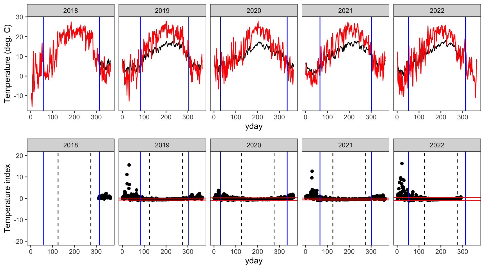
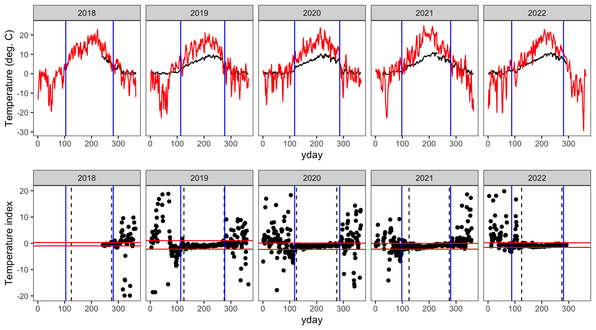
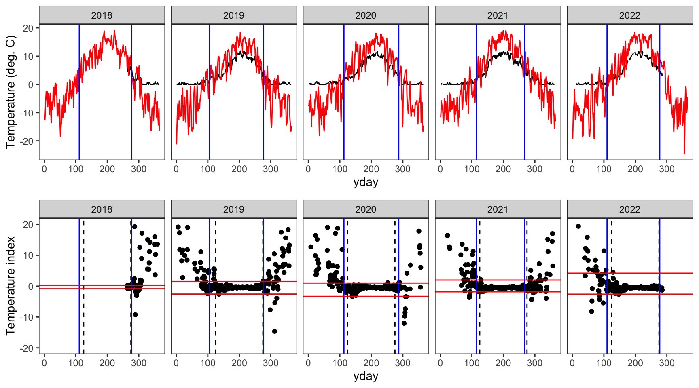
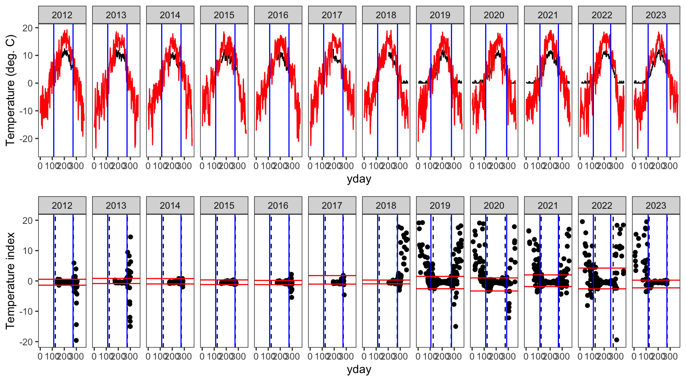
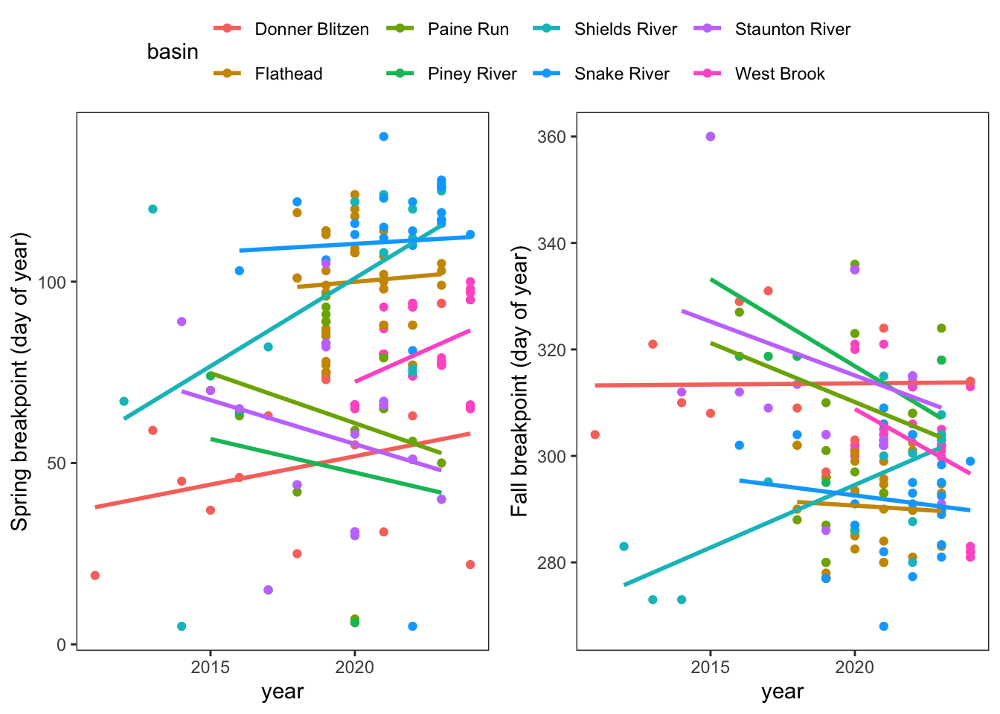
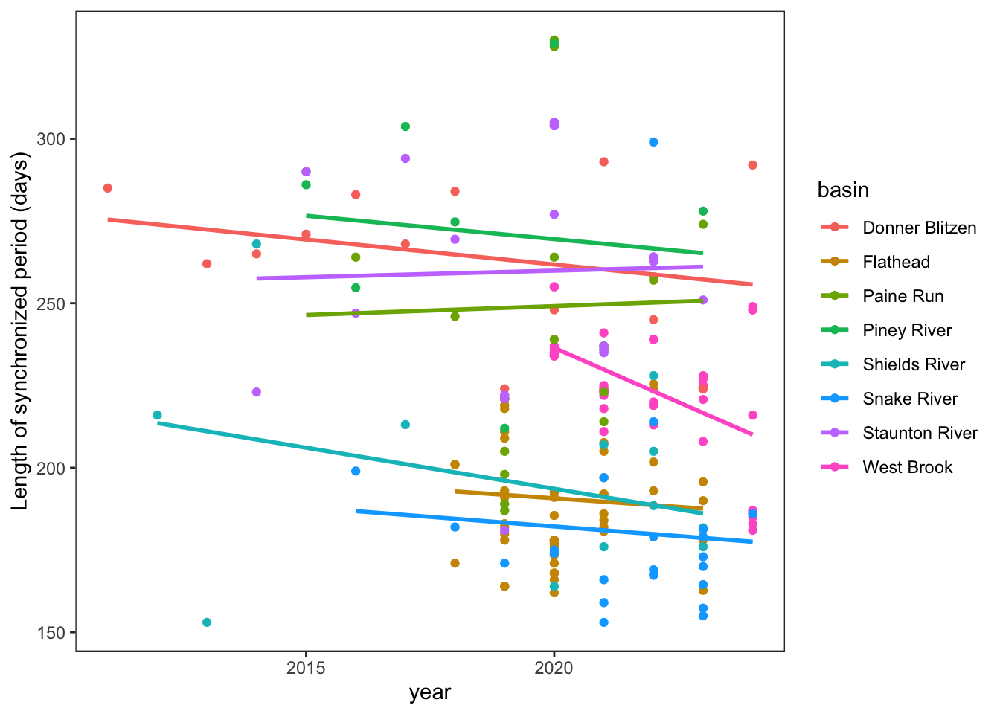
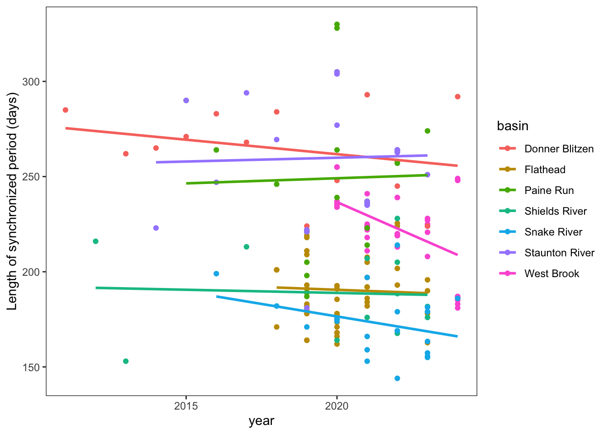

Code
siteinfo <- read_csv("data/EcoDrought_SiteInformation.csv")
datatable(siteinfo)Code
siteinfo_sp <- st_as_sf(siteinfo, coords = c("long", "lat"), crs = 4326)
mapview(siteinfo_sp, zcol = "designation")Purpose: Define periods of air-water temperature synchronization, i.e., calculate spring/fall breakpoints. Code adapted from Letcher et al. (2016)
Site information
siteinfo <- read_csv("data/EcoDrought_SiteInformation.csv")
datatable(siteinfo)siteinfo_sp <- st_as_sf(siteinfo, coords = c("long", "lat"), crs = 4326)
mapview(siteinfo_sp, zcol = "designation")Load flow and temp data
dat <- read_csv("data/EcoDrought_FlowTempData_DailyWeekly.csv")
dat# A tibble: 202,014 × 31
station_no site_name site_id basin subbasin region lat long elev_ft
<chr> <chr> <chr> <chr> <chr> <chr> <dbl> <dbl> <dbl>
1 12355347 Big Creek NWIS BIG Flathe… Big Cre… Flat 48.6 -114. 3528.
2 12355347 Big Creek NWIS BIG Flathe… Big Cre… Flat 48.6 -114. 3528.
3 12355347 Big Creek NWIS BIG Flathe… Big Cre… Flat 48.6 -114. 3528.
4 12355347 Big Creek NWIS BIG Flathe… Big Cre… Flat 48.6 -114. 3528.
5 12355347 Big Creek NWIS BIG Flathe… Big Cre… Flat 48.6 -114. 3528.
6 12355347 Big Creek NWIS BIG Flathe… Big Cre… Flat 48.6 -114. 3528.
7 12355347 Big Creek NWIS BIG Flathe… Big Cre… Flat 48.6 -114. 3528.
8 12355347 Big Creek NWIS BIG Flathe… Big Cre… Flat 48.6 -114. 3528.
9 12355347 Big Creek NWIS BIG Flathe… Big Cre… Flat 48.6 -114. 3528.
10 12355347 Big Creek NWIS BIG Flathe… Big Cre… Flat 48.6 -114. 3528.
# ℹ 202,004 more rows
# ℹ 22 more variables: area_sqmi <dbl>, designation <chr>, date <date>,
# DischargeReliability <dbl>, TempReliability <dbl>, flow_mean <dbl>,
# flow_min <dbl>, flow_max <dbl>, tempc_mean <dbl>, tempc_min <dbl>,
# tempc_max <dbl>, flow_mean_filled <dbl>, flow_mean_cms <dbl>,
# flow_mean_filled_cms <dbl>, area_sqkm <dbl>, Yield_mm <dbl>,
# Yield_filled_mm <dbl>, flow_mean_7 <dbl>, flow_mean_filled_7 <dbl>, …Adjust/filter sites
dat <- dat %>%
# combine sites co-located in space, but not in time (same location but different names depending on year)
mutate(site_name = dplyr::recode(site_name,
"Leidy Creek Mouth NWIS" = "Leidy Creek Mouth",
"SF Spread Creek Lower NWIS" = "SF Spread Creek Lower",
"Dugout Creek NWIS" = "Dugout Creek",
"Shields River ab Smith NWIS" = "Shields River Valley Ranch")) %>%
# drop sites co-located in space and in time (entirely redundant)
filter(!site_name %in% c("Avery Brook NWIS", "West Brook 0", "BigCreekMiddle")) %>%
# drop Piney River (no within basin replication)
filter(basin != "Piney River") %>%
# drop Wounded Buck (no temperature data)
filter(basin != "Piney River") %>%
# drop some big Gs
filter(!site_name %in% c("South River Conway NWIS",
"North Fork Flathead River NWIS",
"Shields River nr Livingston NWIS"
#"Donner Blitzen River nr Frenchglen NWIS",
#"Pacific Creek at Moran NWIS",
)) %>%
group_by(site_name, basin, date) %>%
summarize(flow_mean = mean(flow_mean),
tempc_mean = mean(tempc_mean),
tempc_min = mean(tempc_min),
tempc_max = mean(tempc_max),
Yield_mm = mean(Yield_mm)) %>%
ungroup() %>%
left_join(siteinfo %>% select(site_name, lat, long, area_sqmi, elev_ft))Cut out all days with missing temp records
dat <- dat %>% filter(!is.na(tempc_mean))
dat# A tibble: 100,229 × 12
site_name basin date flow_mean tempc_mean tempc_min tempc_max Yield_mm
<chr> <chr> <date> <dbl> <dbl> <dbl> <dbl> <dbl>
1 Avery Bro… West… 2020-01-08 5.96 0.594 0.111 1.11 1.99
2 Avery Bro… West… 2020-01-09 4.81 0.0336 0 0.111 1.61
3 Avery Bro… West… 2020-01-10 4.88 0.363 0 0.778 1.63
4 Avery Bro… West… 2020-01-11 6.43 1.77 0.778 2.39 2.15
5 Avery Bro… West… 2020-01-12 21.2 2.81 2.11 3.78 7.08
6 Avery Bro… West… 2020-01-13 14.3 1.92 1.56 2.22 4.78
7 Avery Bro… West… 2020-01-14 9.88 2.34 1.89 2.83 3.30
8 Avery Bro… West… 2020-01-15 9.68 2.66 2.11 3.06 3.23
9 Avery Bro… West… 2020-01-16 9.60 1.82 1.11 2.39 3.20
10 Avery Bro… West… 2020-01-17 7.92 0.0463 -0.111 1.11 2.64
# ℹ 100,219 more rows
# ℹ 4 more variables: lat <dbl>, long <dbl>, area_sqmi <dbl>, elev_ft <dbl>Fill missing dates using fasstr
dat <- fill_missing_dates(dat, dates = date, groups = site_name, pad_ends = TRUE)
dat# A tibble: 171,661 × 12
site_name basin date flow_mean tempc_mean tempc_min tempc_max Yield_mm
<chr> <chr> <date> <dbl> <dbl> <dbl> <dbl> <dbl>
1 Avery Bro… <NA> 2020-01-01 NA NA NA NA NA
2 Avery Bro… <NA> 2020-01-02 NA NA NA NA NA
3 Avery Bro… <NA> 2020-01-03 NA NA NA NA NA
4 Avery Bro… <NA> 2020-01-04 NA NA NA NA NA
5 Avery Bro… <NA> 2020-01-05 NA NA NA NA NA
6 Avery Bro… <NA> 2020-01-06 NA NA NA NA NA
7 Avery Bro… <NA> 2020-01-07 NA NA NA NA NA
8 Avery Bro… West… 2020-01-08 5.96 0.594 0.111 1.11 1.99
9 Avery Bro… West… 2020-01-09 4.81 0.0336 0 0.111 1.61
10 Avery Bro… West… 2020-01-10 4.88 0.363 0 0.778 1.63
# ℹ 171,651 more rows
# ℹ 4 more variables: lat <dbl>, long <dbl>, area_sqmi <dbl>, elev_ft <dbl>Unique basins
unique(dat$basin)[1] NA "West Brook" "Flathead" "Shields River"
[5] "Donner Blitzen" "Snake River" "Paine Run" "Staunton River"Bind climate data to flow-temp data
climdf <- read_csv("data/Daymet_daily.csv")
dat <- dat %>% left_join(climdf)Plot an example air (orange) and water (blue) temperature time series
dat %>% filter(site_name == "BigCreekLower") %>% #select(date, tempc_mean, air_temp_mean) %>%
ggplot() +
geom_line(aes(x = date, y = air_temp_mean), color = "darkorange") +
geom_line(aes(x = date, y = tempc_mean), color = "blue") +
theme_bw() + ylab("temperature (deg C)")
Prep data
# Calculate temperature index. Add small # to avoid infinity
dat_index <- dat %>%
mutate(index = (tempc_mean - air_temp_mean) / (tempc_mean + 0.00000001),
year = year(date)) %>%
filter(!is.na(yday))
# Define list of sites
siteList <- unique(dat_index$site_name)
# Order by group and date
dat_index <- dat_index[order(dat_index$site_name, dat_index$year, dat_index$yday),]
# For checking the order of e
dat_index$count <- 1:length(dat_index$year)
# Define the site/year ID
dat_index$siteYear <- paste(dat_index$site_name, dat_index$year, sep = '_')
# Maintain order
dat_index <- dat_index[order(dat_index$count),]
dat_index# A tibble: 167,535 × 22
site_name basin date flow_mean tempc_mean tempc_min tempc_max Yield_mm
<chr> <chr> <date> <dbl> <dbl> <dbl> <dbl> <dbl>
1 Avery Bro… <NA> 2020-01-01 NA NA NA NA NA
2 Avery Bro… <NA> 2020-01-02 NA NA NA NA NA
3 Avery Bro… <NA> 2020-01-03 NA NA NA NA NA
4 Avery Bro… <NA> 2020-01-04 NA NA NA NA NA
5 Avery Bro… <NA> 2020-01-05 NA NA NA NA NA
6 Avery Bro… <NA> 2020-01-06 NA NA NA NA NA
7 Avery Bro… <NA> 2020-01-07 NA NA NA NA NA
8 Avery Bro… West… 2020-01-08 5.96 0.594 0.111 1.11 1.99
9 Avery Bro… West… 2020-01-09 4.81 0.0336 0 0.111 1.61
10 Avery Bro… West… 2020-01-10 4.88 0.363 0 0.778 1.63
# ℹ 167,525 more rows
# ℹ 14 more variables: lat <dbl>, long <dbl>, area_sqmi <dbl>, elev_ft <dbl>,
# yday <dbl>, air_temp_mean <dbl>, precip_mmday <dbl>, swe_kgm2 <dbl>,
# daylength_sec <dbl>, shortrad_wm2 <dbl>, index <dbl>, year <dbl>,
# count <int>, siteYear <chr>Get the moving average of the temp index for each site and add to data frame
# Set frame sizefor moving mean, which is centered by default
window <- 10
# Number of sites
nSites <- length(siteList)
# Unique site and year combos
siteYearCombos <- unique(dat_index[,c('site_name','year')])
# Add columns for moving mean and sd
dat_index$movingMean <- NA
# Loop through site/year combinations calculating moving means
for (i in 1:nrow(siteYearCombos)){
# Status
# print(c(i,as.character(siteYearCombos$site_name[i]), siteYearCombos$year[i], i/nrow(siteYearCombos)))
# Index current site/year
currSite <- which(dat_index$site_name == as.character(siteYearCombos$site_name[i]) & dat_index$year == siteYearCombos$year[i] )
# Only calculate for sites with enough data
if(length(currSite) >= window){currMean <- rollapply(dat_index$index[currSite], width = window, fill = NA, mean)} else(currMean <- NA)
# Add to main dataframe
dat_index$movingMean[currSite] <- currMean
}
# Maintain order
dat_index <- dat_index[order(dat_index$count),]
write_csv(dat_index, "data/EcoDrought_FlowTempData_DailyWeekly_clean.csv")Create the breaks data frame
# Define breakpoint time period and range for tempIndex
beginningDayForCI <- 125
endingDayForCI <- 275
loCI <- 0.001
hiCI <- 0.999
for ( i in 1:nrow(siteYearCombos)){
# Print status
#print(i)
# Index sites, years, and HUCs
tempBreaks <- data.frame( year = as.numeric (siteYearCombos$year[i]),
site_name = as.character(siteYearCombos$site_name[i]),
# HUC12 = as.character(unique(e$HUC12[which(e$site == siteYearCombos$site[i])])),
#HUC8 = as.character(unique(e$HUC8 [which(e$site == siteYearCombos$site[i])])),
#HUC4 = as.character(unique(e$HUC4 [which(e$site == siteYearCombos$site[i])])),
quantileLo = NA,
quantileHi = NA)
# Calculate the tempindex quantiles
tmp <- dat_index[dat_index$site_name == siteYearCombos$site_name[i] & dat_index$year %in% siteYearCombos$year[i] & dat_index$yday %in% beginningDayForCI:endingDayForCI, 'index']
if (any(!is.na(tmp))){
TIQ <- quantile(tmp, probs = c(loCI,0.5,hiCI), na.rm = TRUE)
# High and low quantiles
tempBreaks$quantileLo <- TIQ[1]
tempBreaks$quantileHi <- TIQ[3]
}
# Add current site to "breaks"
if ( i == 1 ) { breaks <- tempBreaks } else( breaks <- rbind(breaks, tempBreaks))
}
# Add columns used later
breaks$springBPComplete <- FALSE
breaks$fallBPComplete <- FALSE
breaks$springOrFallBPComplete <- FALSE
breaks$springBP <- NA
breaks$fallBP <- NA
head(breaks) year site_name quantileLo quantileHi springBPComplete fallBPComplete
1 2020 Avery Brook -0.4928280 0.4245787 FALSE FALSE
2 2021 Avery Brook -0.4853836 0.2876319 FALSE FALSE
3 2022 Avery Brook -0.4425745 0.1521084 FALSE FALSE
4 2023 Avery Brook -0.4431010 0.2761850 FALSE FALSE
5 2024 Avery Brook -0.4147228 0.0801055 FALSE FALSE
6 2017 BigCreekLower -0.4135217 0.7688442 FALSE FALSE
springOrFallBPComplete springBP fallBP
1 FALSE NA NA
2 FALSE NA NA
3 FALSE NA NA
4 FALSE NA NA
5 FALSE NA NA
6 FALSE NA NAUse runs analysis of the movingMean to define spring and fall breakpoints:
# Set range (dOY) and count for assigning spring BP
minCompleteDOYBP1 <- 15
maxCompleteDOYBP1 <- 175
numForCompleteBP1 <- round( ( maxCompleteDOYBP1-minCompleteDOYBP1 ) * 0.9 )
# Set range (dOY) and count for assigning fall BP
minCompleteDOYBP3 <- 225
maxCompleteDOYBP3 <- 350
numForCompleteBP3 <- round( ( maxCompleteDOYBP3-minCompleteDOYBP3 ) * 0.9 )
# Number of days in a row that need to be within the CIs to get assigned synchronised (referred to as numForward range)
numForwardSpring <- 10
numForwardFall <- 16
# Loop through all sites
for (j in 1:nSites){
#library(plyr)
# Index current site
# ------------------
e1 <- dat_index[dat_index$site_name == siteList[j],]
# Index spring range
# ------------------
e3Spring <- e1[ e1$yday >= minCompleteDOYBP1 & e1$yday <= maxCompleteDOYBP1, ]
# Empty out from previous run
completeYearsSpring <- NULL
# If statement to avoid error if e3Spring is empty
if ( !plyr::empty( e3Spring ) ) {
# Determine which years have complete records in spring
completeSpring <- as.data.frame( table( e3Spring$year,is.na( e3Spring$tempc_mean ) ) )
incompleteYearsSpring <- as.numeric(as.character(completeSpring$Var1[completeSpring$Var2 == 'FALSE' & completeSpring$Freq < numForCompleteBP1]))
completeYearsSpring <- as.numeric(as.character(completeSpring$Var1[completeSpring$Var2 == 'FALSE' & completeSpring$Freq >= numForCompleteBP1]))
}
# Index fall range
# ----------------
e3Fall <- e1[ e1$yday >= minCompleteDOYBP3 & e1$yday <= maxCompleteDOYBP3, ]
# Empty out from previous run
completeYearsFall <- NULL
# If statement to avoid error if e3Fall is empty
if ( !plyr::empty( e3Fall ) ) {
# Determine which years have complete records in fall
completeFall <- as.data.frame( table( e3Fall$year,is.na( e3Fall$tempc_mean ) ) )
incompleteYearsFall <- as.numeric(as.character(completeFall$Var1[completeFall$Var2 == 'FALSE' & completeFall$Freq < numForCompleteBP3]))
completeYearsFall <- as.numeric(as.character(completeFall$Var1[completeFall$Var2 == 'FALSE' & completeFall$Freq >= numForCompleteBP3]))
}
# Years with either a complete spring or complete fall record
completeYearsSpringOrFall <- unique(c(completeYearsSpring,completeYearsFall))
# Loop through the years with at least one complete season
for (year in completeYearsSpringOrFall){
# Print status
#print(c('BP 1 and 3',j,as.character(siteList[j]),year))
# New column for selecting years with at least one complete season
breaks$springOrFallBPComplete[ breaks$year == year & breaks$site_name == siteList[j] ] <- TRUE
# Index the high and low quantiles calculated from the tempIndex
lo <- breaks$quantileLo[breaks$year == year & breaks$site_name == siteList[j]]
hi <- breaks$quantileHi[breaks$year == year & breaks$site_name == siteList[j]]
# Index current year
eYear <- e1[e1$year == year, ]
# Spring Breakpoint Calculation
# -----------------------------
# Create dataframe for calculating number of synchronized days in a row.
runsSpring <- data.frame(array(NA,c(1,numForwardSpring)))
# Only calculate if it is a complete season
if(year %in% completeYearsSpring){
# Loop through approximate time forward until breakpoint in ascending water temp
for (i in min(eYear$yday):(200)){
# From the current day, loop forward through the numForward range to determined which days are in sync
for (ii in 2:numForwardSpring ){
# A 1 gets assigned if the moving mean of that day is within the CI range or
# if the iteration falls out of the approximated range examined. If the moving
# mean is outside of the range, it gets assigned a zero.
if( (i+ii-2) %in% eYear$yday ) {
runsSpring[ i,ii ] <- 1*((eYear$movingMean[ eYear$yday == (i+ii-2) ] >= lo) & (eYear$movingMean[ eYear$yday == (i+ii-2) ] <= hi))
} else (runsSpring[ i,ii ] <- 1 )
}# end numForward loop
# Determine if all of the days in the numForward range are in sync. If all days within numForward
# are in sync (assigned a 1), the product will be a 1, otherwise it is NA.
runsSpring[ i,1 ] <- prod( runsSpring[ i, 2:numForwardSpring ] )
}# End approximated seasonal loop
# The first day where all of the days ahead of it are in sync (in the numForward range) will be the minimum day with a 1.
# This day gets assigned the spring breakpoint
breaks$springBP[ breaks$year == year & breaks$site_name == siteList[j] ] <- min(which(runsSpring[,1] == 1))
# Fill in the complete springBP column
breaks$springBPComplete[ breaks$year == year & breaks$site_name == siteList[j] ] <- TRUE
} #completeYearsSpring if statement
# Fall Breakpoint Calculation
# ---------------------------
# Create dataframe for calculating number of days in a row within range
runsFall <- data.frame(array(NA,c(1,numForwardFall)))
# Only calculate if it is a complete season
if(year %in% completeYearsFall){
# Determine the point to stop to keep from going past lower limit if dOY
stopLoop <- max( c( minCompleteDOYBP3,min(eYear$yday)+numForwardFall + 1 ) )
# Loop through the approximate time backward until descending water temp
for (i in max(eYear$yday):stopLoop){
# From the current day, loop backward through the numForward range to determined which days are in sync
for (ii in 2:numForwardFall ){
# A 1 gets assigned if the moving mean of that day is within the CI range or
# if the iteration falls out of the approximated range examined. If the moving
# mean is outside of the range, it gets assigned a zero.
if( (i-ii+2) %in% eYear$yday ) {
runsFall[ i,ii ] <- 1*((eYear$movingMean[ eYear$yday == (i-ii+2) ] >= lo) & (eYear$movingMean[ eYear$yday == (i-ii+2) ] <= hi))
} else(runsFall[ i,ii ] <- 1 )
}# end numForward loop
# Determine if all of the days in the numForward range are in sync. If all days within numForward
# are in sync (assigned a 1), the product will be a 1, otherwise it is NA.
runsFall[ i,1 ] <- prod( runsFall[ i, 2:numForwardFall ] )
}# End approximated seasonal loop
# The last day where all of the days ahead of it are in sync (in the numForward range) will be the minimum day with a 1.
# This day gets assigned the fall breakpoint
breaks$fallBP[ breaks$year == year & breaks$site_name == siteList[j] ] <- max(which(runsFall[,1] == 1))
# Fill in the complete fallBP column
breaks$fallBPComplete[ breaks$year == year & breaks$site_name == siteList[j] ] <- TRUE
} #completeYearsFall if statement
} #completeYearsSpringOrFall loop
} #site loop
head(breaks) year site_name quantileLo quantileHi springBPComplete fallBPComplete
1 2020 Avery Brook -0.4928280 0.4245787 TRUE TRUE
2 2021 Avery Brook -0.4853836 0.2876319 TRUE TRUE
3 2022 Avery Brook -0.4425745 0.1521084 TRUE TRUE
4 2023 Avery Brook -0.4431010 0.2761850 TRUE FALSE
5 2024 Avery Brook -0.4147228 0.0801055 TRUE TRUE
6 2017 BigCreekLower -0.4135217 0.7688442 FALSE FALSE
springOrFallBPComplete springBP fallBP
1 TRUE 66 300
2 TRUE 93 304
3 TRUE 94 313
4 TRUE 79 NA
5 TRUE 97 282
6 FALSE NA NAFor sites that did not have enough data to calculate a breakpoint, use the mean breakpoint at the smallest scale that a mean exists (site or basin).
# Calculate mean BPs across different scales
meanBPSite <- plyr::ddply(breaks, "site_name", summarise, meanSpringBPSite = mean(springBP, na.rm = T), meanFallBPSite = mean(fallBP, na.rm = T) )
meanBPBasin <- plyr::ddply(breaks %>% left_join(siteinfo %>% select(site_name, basin)), "basin", summarise, meanSpringBPBasin = mean(springBP,na.rm=T), meanFallBPBasin = mean(fallBP,na.rm=T) )
#meanBPHUC8 <- ddply( breaks, .(HUC8) , summarise, meanSpringBPHUC8 = mean(springBP,na.rm=T), meanFallBPHUC8 = mean(fallBP,na.rm=T) )
#meanBPHUC4 <- ddply( breaks, .(HUC4) , summarise, meanSpringBPHUC4 = mean(springBP,na.rm=T), meanFallBPHUC4 = mean(fallBP,na.rm=T) )
# Merge in mean BPs to "breaks"
breaks <- merge( x = breaks, y = meanBPSite , by = 'site_name' , all.x = T, all.y = F, sort = F)
breaks <- merge( x = breaks %>% left_join(siteinfo %>% select(site_name, basin)), y = meanBPBasin, by = 'basin', all.x = T, all.y = F, sort = F)
#breaks <- merge( x = breaks, y = meanBPHUC8 , by = 'HUC8' , all.x = T, all.y = F, sort = F)
#breaks <- merge( x = breaks, y = meanBPHUC4 , by = 'HUC4' , all.x = T, all.y = F, sort = F)
# Add columns for final breakpoints
breaks$finalSpringBP <- NA
breaks$sourceSpringBP <- NA
breaks$finalFallBP <- NA
breaks$sourceFallBP <- NA
# Calculated BPs
# --------------
# Spring
newSpringBP <- which(is.na(breaks$finalSpringBP) & !is.na(breaks$springBP) )
breaks$finalSpringBP [ newSpringBP ] <- breaks$springBP[ newSpringBP ]
breaks$sourceSpringBP[ newSpringBP ] <- 'directly calculated'
#Fall
newFallBP <- which(is.na(breaks$finalFallBP) & !is.na(breaks$fallBP) )
breaks$finalFallBP [ newFallBP ] <- breaks$fallBP[ newFallBP ]
breaks$sourceFallBP[ newFallBP ] <- 'directly calculated'
# Site averaged BPs
# -----------------
# Spring
siteBP <- which(is.na(breaks$finalSpringBP) & !is.na(breaks$meanSpringBPSite) )
breaks$finalSpringBP [ siteBP ] <- breaks$meanSpringBPSite[ siteBP ]
breaks$sourceSpringBP[ siteBP ] <- 'site mean'
# Fall
siteBP <- which(is.na(breaks$finalFallBP) & !is.na(breaks$meanFallBPSite) )
breaks$finalFallBP [ siteBP ] <- breaks$meanFallBPSite[ siteBP ]
breaks$sourceFallBP[ siteBP ] <- 'site mean'
# Basin averaged BPs
# ------------------
# Spring
basinBP <- which(is.na(breaks$finalSpringBP) & !is.na(breaks$meanSpringBPBasin) )
breaks$finalSpringBP [ basinBP ] <- breaks$meanSpringBPBasin[ basinBP ]
breaks$sourceSpringBP[ basinBP ] <- 'basin mean'
# Fall
basinBP <- which(is.na(breaks$finalFallBP) & !is.na(breaks$meanFallBPBasin) )
breaks$finalFallBP [ basinBP ] <- breaks$meanFallBPBasin[ basinBP ]
breaks$sourceFallBP[ basinBP ] <- 'basin mean'View final breakpoint data
datatable(breaks)Write to file
# Index the columns to save
springFallBPs <- breaks[,c('basin', 'site_name', 'year', 'finalSpringBP', 'sourceSpringBP', 'finalFallBP', 'sourceFallBP','quantileLo','quantileHi')]
# fix erroneous Rock Creek, Lodgepole Creek spring breakpoint
# springFallBPs <- read_csv("data/breakpoints.csv")
springFallBPs <- springFallBPs %>%
mutate(finalSpringBP = ifelse(site_name == "Rock Creek", 111, finalSpringBP),
sourceSpringBP = ifelse(site_name == "Rock Creek", "basin mean", sourceSpringBP)) %>%
mutate(finalSpringBP = ifelse(site_name == "Lodgepole Creek", 99, finalSpringBP),
sourceSpringBP = ifelse(site_name == "Lodgepole Creek", "basin mean", sourceSpringBP))
# Save the output
write_csv(springFallBPs, "data/breakpoints.csv")Show examples of the breakpoint calculations for one stream in each basin. Compare to Figure 3 in Letcher et al. (2016). Note, this doesn’t really work in the Donner-Blitzen, where temperature data during winter/the shoulder seasons is entirely unavailable…nothing to inform breakpoint estimatation outside of the middle 150 days of year.
Create plotting function
indexfun <- function(site) {
# thermographs
p1 <- ggplot() +
geom_line(data = dat_index %>% filter(site_name == site), aes(x = yday, y = tempc_mean)) +
geom_line(data = dat_index %>% filter(site_name == site), aes(x = yday, y = air_temp_mean), color = "red") +
geom_vline(data = breaks %>% filter(site_name == site), aes(xintercept = finalFallBP), color = "blue") +
geom_vline(data = breaks %>% filter(site_name == site), aes(xintercept = finalSpringBP), color = "blue") +
facet_wrap(~year, nrow = 1) +
theme_bw() + theme(panel.grid = element_blank()) +
ylab("Temperature (deg. C)")
# temperature indices
p2 <- ggplot() +
geom_point(data = dat_index %>% filter(site_name == site), aes(x = yday, y = index)) +
geom_vline(xintercept = c(125,275), linetype = "dashed") +
geom_vline(data = breaks %>% filter(site_name == site), aes(xintercept = finalFallBP), color = "blue") +
geom_vline(data = breaks %>% filter(site_name == site), aes(xintercept = finalSpringBP), color = "blue") +
geom_hline(data = breaks %>% filter(site_name == site), aes(yintercept = quantileLo), color = "red") +
geom_hline(data = breaks %>% filter(site_name == site), aes(yintercept = quantileHi), color = "red") +
facet_wrap(~year, nrow = 1) +
theme_bw() + theme(panel.grid = element_blank()) +
ylim(-20,20) +
ylab("Temperature index")
# arrange figures
return(ggarrange(p1, p2, ncol = 1))
}indexfun("Avery Brook")
indexfun("Paine Run 01")
indexfun("Staunton River 02")indexfun("McGeeCreekTrib")
indexfun("Dugout Creek")
indexfun("Leidy Creek Mouth")
indexfun("Little Blizten River NWIS")
Plot trends in spring and fall breakpoints (only those we directly calculated). We have a ~limited number of years and so this isn’t all that informative
p1 <- springFallBPs %>%
filter(sourceSpringBP == "directly calculated") %>%
ggplot(aes(x = year, y = finalSpringBP, color = basin)) +
geom_point(aes(color = basin)) +
geom_smooth(method = "lm", se = FALSE) +
ylab("Spring breakpoint (day of year)") +
theme_bw() + theme(panel.grid = element_blank())
p2 <- springFallBPs %>%
filter(sourceSpringBP == "directly calculated") %>%
ggplot(aes(x = year, y = finalFallBP, color = basin)) +
geom_point(aes(color = basin)) +
geom_smooth(method = "lm", se = FALSE) +
ylab("Fall breakpoint (day of year)") +
theme_bw() + theme(panel.grid = element_blank())
ggpubr::ggarrange(p1, p2, nrow = 1, common.legend = TRUE)
Trends in length of synchronized period
springFallBPs %>%
filter(sourceSpringBP == "directly calculated") %>%
mutate(SynchLen = finalFallBP - finalSpringBP) %>%
ggplot(aes(x = year, y = SynchLen, color = basin)) +
geom_point(aes(color = basin)) +
geom_smooth(method = "lm", se = FALSE) +
ylab("Length of synchronized period (days)") +
theme_bw() + theme(panel.grid = element_blank())